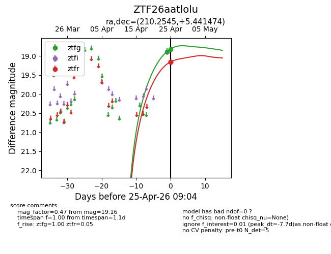
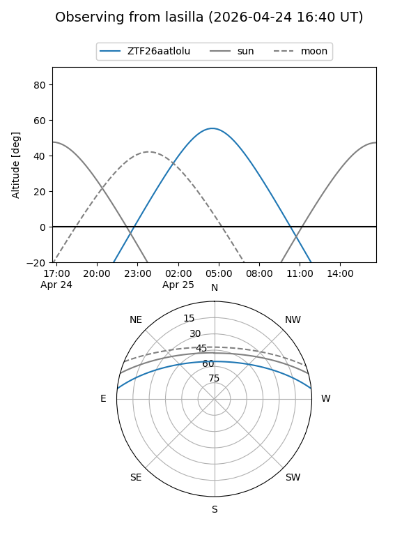
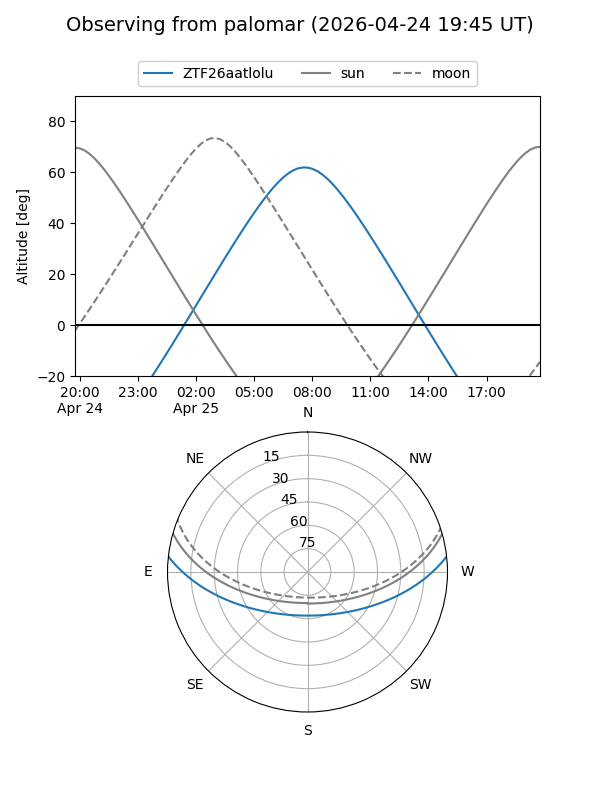
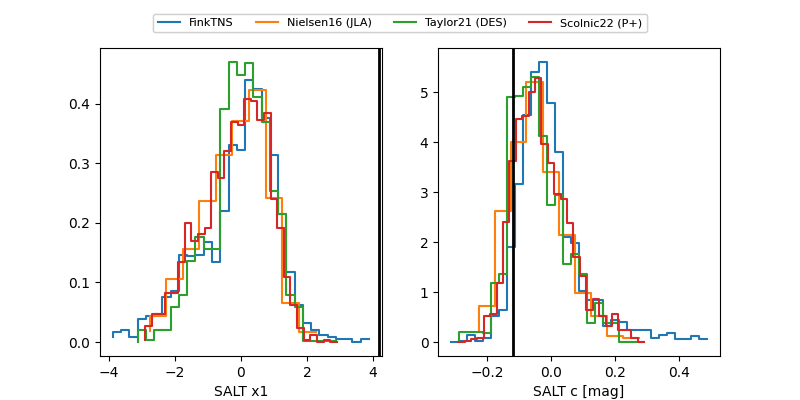

ZTF26aatlolu
Target ZTF26aatlolu at 2026-04-25 09:06
Aliases and brokers:
FINK: link
Lasair: link
ALeRCE: link
alt names
ZTF26aatlolu (ztf,fink_ztf)
Coordinates:
equatorial (ra, dec) = 210.2545,+5.44147
equatorial (HMS+DMS) = 14:01:01.09,+05:26:29.31
galactic (l, b) = (343.4064,+62.71017)
Flags:
Photometry:
last ztfg=18.82, ztfr=19.16
2 ztfg, 3 ztfr detections
Lightcurve

Visibility


Additional plots
